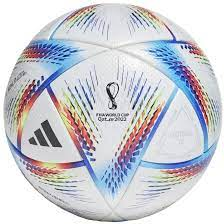

1/19/24 - This week was pretty busy. On Monday during Marthin Luther King Jr. day I was doing my pink slip. I finished it and I got it yesterday. Then the next day I had piano and then I went to my grandmas house to do some homework with my aunt. Then we made ooblek in this class. Then I went to dance on thrusday and now its friday.
1/26/24 - We started the mousetrap car project. Our goal is to make a car out of a moustrap and see which car goes the farthest. We have 2 ideas, on is to make the car with the same wheels and another one which there is one wheel on the back and it is 2 times bigger than the rest of the wheels. Next week I would like to start the BOM.
2/5/24 - Last week we designed our CAD and we started slowly builidng the cars out of cardboard. Our goal for next week is that is to finish our first car and start working on the second car. The cad and the BOM should be completed by Friday. I went to play soccer with my friends. We played a 5 on 5 for 2 hours then we went to get wingstop after.
2/13/24 - This week we started working on the finishing touches on our car and when we went to test our car, it almost snapped in half. Me and my partner had to stay a whole 20 minutes to make a whole other car and we actually got second place. I think that if we had more time obviously that we could plan everything out and do it better.
2/26/24 - Our car was about a foot long, maybe even shorter. We made it in less then 20 minutes and we actually got second place. our first car went about 40-45 feet and our second car went about 60-65 feet. There was only one car infront of us and the only reason was because they put a lot more time and work into theirs, while we only put 15 minutes into our car. I would make our car longer and more sturdy without trying to add to much weight.
3/4/24 - The project we are working on right now is the egg drop. Our goal is to drop an egg from a height height, but have the egg not shatter using given resources. Our idea is a parachute with a bunch of supportive padding where it is supposed to land. The scariest thing that could happen is that the parachute will not deploy in time and it will hit the ground.

3/13/24 - Our eggdrop went suprisingly well even though our parachute didn't work. Our whole project landed upside down, but our egg still survived. The only reason that our egg slightly cracked only because when I opened the cap, the egg rolled and cracked on the ground. Over spring break i'm gonna hang out with my friends and my cousins and maybe just maybe go to Big Bear.

3/29/24 - The project we just started has to do with a boat. There is a gutter and the boat has to travel down the gutter in the fastest time possible. Our idea is to attach ballons to the back of the boat and let the air from the ballons carry the boat all the way down. My favorite part of spring break was playing soccer and my cousins sleeping over. I want to get staight A's before the end of the semester.

4/5/24 - The project we have been working on has been the build a boat with limited materials. My boat ended up sinking and even with the motor and the fan off it still didn't float. We could have made the boat a little lighter it would have done better. This class has been a blast i cant choose a favorite part i loved every part of this class. My plans for this weekend are just to do homework and and study for my permit test.
4/15/24 - The project we are starting is the cardboard boat. We have to make a boat using only cardboard that has to support 2 peoples weights and we have to row back and forth in the CV pool. We had to make the longest bridge out of sticky notes. I am looking forward to going out with my friends and just enjoying my break.
4/26/24 - The project we have been working on is the cardboard boat. Our progress is that we made all the walls and we barely started on the base. Some challenges are that our boat might weight a lot and that might effect our floating ability. I am excited to sit in the boat and row. Some sterotypes are that Armenians spray to much cologne and that we have loud cars which is true, but people say it to much.
5/6/24 - The progress we have made is pretty significant. We finished the walls. Now we are starting to do the base. This week we are planning on finishing the base and taping the walls if we have time. One concern is that we might be running low on tape. Orange Juice HUNDO. Its gas. Thats all I have to say.


5/13/24 - We are almost done with our bases then we have to tape everything together. Taping the walls to the base and then we are done. We went to both my grandmas houses and we ate a lot.


5/20/24 - We are taping the walls then we are going to be done with our boat. Last week we taped all the bases together and all that left is to tape the walls. Once we finish the boat we will start on making the architecture project. I have truly loved this course. It has been so fun and I have learned so much. I've like all the projects we've done they are all fun. I would change the actual tests and if not any I would have less quizzes. Summer plans would be to play soccer and maybe go to Greece. I plan to get A's all my finals hopefully. Mr. Poole Ես սիրում եմ քեզ